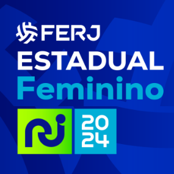

A primeira fase do
Campeonato Carioca Feminino 2024
será disputada por 11 equipes, divididas em dois grupos:
-
Grupo A
Boavista, Botafogo, Flamengo, Olaria, Pérolas Negras, Resende.
-
Grupo B
Araruama, Duque de Caxias, Fluminense, Serra Macaense, Vasco da Gama.
São classificadas para as semi-finais as 2 equipes de cada grupo que mais pontuarem.
Em todas as questões a seguir, considere que:
-
Na primeira fase, todas as equipes de um grupo jogam contra todas as equipes do outro grupo, exatamente uma vez.
-
Um jogo da primeira fase é uma partida disputada entre uma equipe do Grupo A e uma equipe do Grupo B.
-
A primeira fase é dividida em rodadas.
-
Uma rodada é constituída por jogos em que uma das equipes do Grupo A fica de folga (não participa da rodada) e todas as outras equipes jogam exatamente uma vez.
Ou seja, em uma rodada, todas as equipes disputam uma partida apenas (com exceção da equipe que está de folga, que não joga).
-
Uma tabela para a primeira fase é uma lista com todos os jogos da primeira fase,
divididos em rodadas.
-
Um grupo de semi-finalistas é constituído por 2 equipes do Grupo A e 2 equipes do Grupo B.
-
Uma tabela para as semi-finais é uma lista com 2 jogos:
um jogo entre a primeira colocada do Grupo A e a segunda colocada do Grupo B e
um jogo entre a primeira colocada do Grupo B e a segunda colocada do Grupo A.
Questões
-
Quantos são os jogos da primeira fase?
-
Uma rodada é constituída de quantos jogos?
-
Quantas rodadas diferentes podemos montar, para a primeira fase?
-
Quantos grupos de semi-finalistas podem ser montados?
-
Quantas tabelas diferentes podem ser montadas, para as semi-finais?
-
Quantas tabelas diferentes podem ser montadas, para a primeira fase?
Licença
Esta lista de exercícios, da autoria de Renata de Freitas, está licenciada sob a licença
CC BY SA
(Licenças Creative Commons Brasil).
Em resumo, esta licença permite a redistribuição do material, de forma comercial ou não comercial,
em sua totalidade ou em partes, com ou sem modificações, e a adaptação e criação de obras derivadas,
desde que seja atribuído o devido crédito à autora e que as novas criações feitas a partir desse material sejam licenciadas sob termos idênticos.